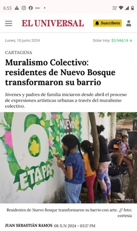
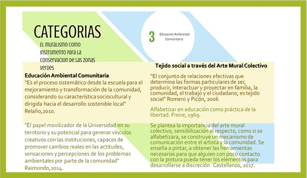
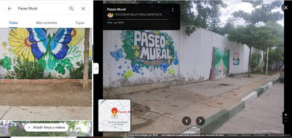

Educación ambiental comunitaria desde el arte mural
Bienvenidos
Este sitio visibiliza el trabajo realizado con comunidades desde la educación ambiental, la gestión participativa y el muralismo colectivo como estrategia de aprendizaje transformador.
¿Qué es MURALCOLECTIVO COLOMBIA?
Es un proyecto educativo y comunitario que nace del diálogo de saberes y la acción colectiva. Promueve procesos de aprendizaje colaborativo a través del arte mural en espacios públicos, como expresión de identidad, resistencia y memoria ambiental.
Educación ambiental comunitaria
La propuesta se enmarca en la pedagogía crítica y la educación ambiental popular, fortaleciendo capacidades locales y visibilizando problemáticas ambientales desde las voces de la comunidad.
¿Qué es MuralColectivo Colombia?
MuralColectivo Colombia es una iniciativa liderada por Kelly Montes Buelvas, Mg. en Educación Ambiental y Desarrollo Local, que integra el arte mural, la participación comunitaria y la educación ambiental como herramientas de transformación social. A través de metodologías de acción participación, este proyecto ha logrado visibilizar saberes locales, fortalecer la identidad barrial y sensibilizar a comunidades en torno a la sostenibilidad y el cuidado del entorno. Descubre cómo el color y la palabra se han convertido en instrumentos pedagógicos al servicio de la justicia ambiental en Colombia.
Resultados del Proyecto
Más de 12 murales comunitarios co-creados.

Participación activa de 12 familias, con niños, jóvenes y adultos mayores.

Formación en educación ambiental para la comunidad.

Identidad de Patrimonio Ambiental, antes calle Diag27A ahora calle del PASEO MURAL.
Galería de Murales por Localidad
San Francisco
Olaya Herrera
Fredonia
Línea de Tiempo del Proceso
Marzo 2024: Inicio de diagnóstico participativo con las comunidades.
Mayo 2024: Primeros talleres de sensibilización ambiental.
Agosto 2024: Creación colectiva de los diseños de murales.
Noviembre 2024: Ejecución muralista y jornadas de integración barrial.
Enero 2025: Sistematización, reflexiones finales y cierre del proyecto.
Alcance y proyección
La experiencia ha sido presentada en eventos académicos, espacios institucionales y redes de educación ambiental. MURALCOLECTIVO COLOMBIA sigue inspirando nuevas iniciativas en otros territorios.
Archivo de Murales
Aquí encontrarás imágenes, reseñas y relatos de los murales colectivos realizados, así como las historias detrás de cada intervención. (Esta sección se actualizará con una galería próximamente.)
Testimonios
"Participar en este proyecto me ayudó a ver mi comunidad con otros ojos." – Habitante local
"Los murales fueron una forma de enseñar sin sermones, con colores y corazón." – Estudiante
Contacto y Reconocimientos
Si deseas conocer más, replicar esta experiencia o vincularte a nuevas acciones, escríbenos a: